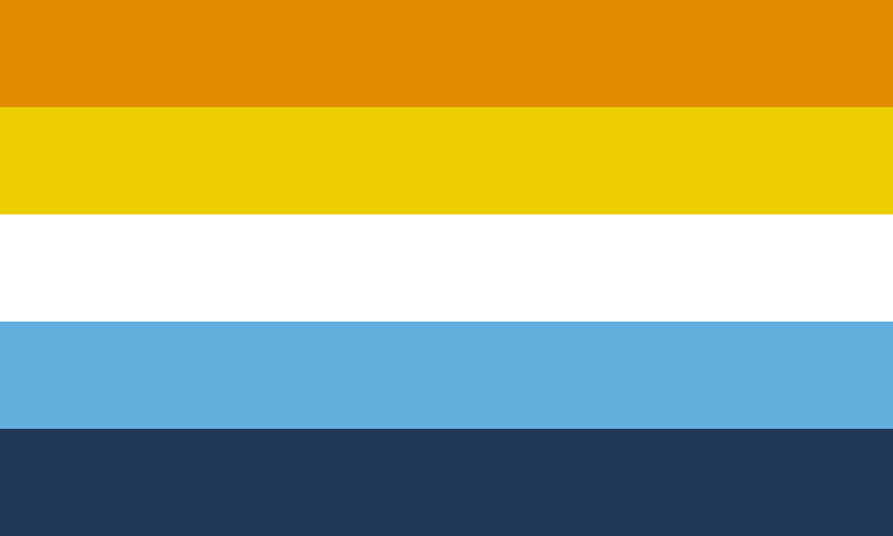

"You can't be gay and aroace" - way too many people
(this isn't necessarily directed at you, its more just to exemplify why I'm making this page.)
"Nuh Uh" - me :)
Okay, so I get told this a lot, and it's starting to get annoying, so I'm just going to make this, and send the link to people when they ask :D
Aroace (aromantic asexual) is an umbrella term, which really just means that you experience “little to no romantic and sexual attraction”.
There are two different reasons (that I know of) why one might identify with both these labels at once, and I think I fall under both of them (to an extent)
Reason One:
Many different sub-identities fall under the aroace umbrella, some you’ve (probably) heard of, and many you (probably) haven’t. These identities often make use of a secondary label, such as demisexual or graysexual, where you still feel some attraction, but much less than average, so they still fall under the umbrella. People who are demi though, for example, tend to use that label, and not the umbrella term, but many people, especially those who have more obscure “correct” labels, like myself, just use aroace, because it's what people know, and we don’t want to explain their overcomplicated identity every time they get asked. Most of the time it is easier to say “I’m a gay aroace” than to say “I’m a gay aegosexual”, because no one knows what the fuck aegosexual means.
Reason Two:
The aroace label only means little to no romantic and sexual attraction, and does not say anything about other attraction types which, contrary to popular belief, are real. In addition to romantic and sexual, which are the only ones that are really ever talked about, there are many others, such as aesthetic attraction, or intellectual attraction. These tertiary attraction types are not governed by the aroace label, and are separate from it, so one can definitely be fully aroace, and still experience these other attraction types for members of the same sex, and consider themselves gay.
So, what am I?
Technically, I am aegosexual and gay, I don’t feel romantic or sexual attraction to anyone, but I do feel other forms of attraction, mainly aesthetic, and that aesthetic attraction is directed at people of the same sex, which is part of what makes me gay.
